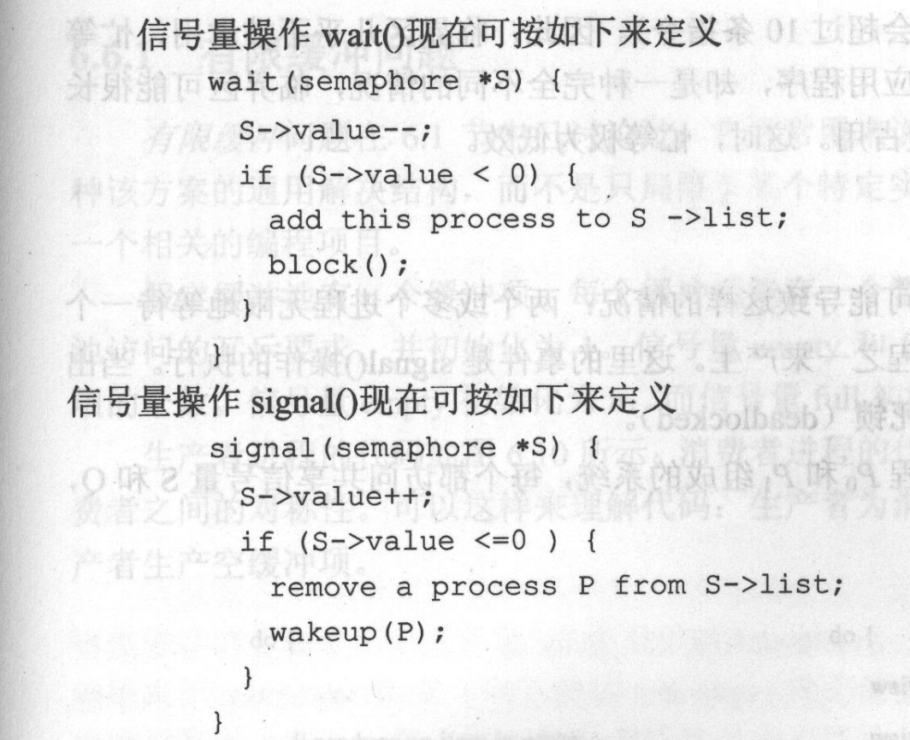
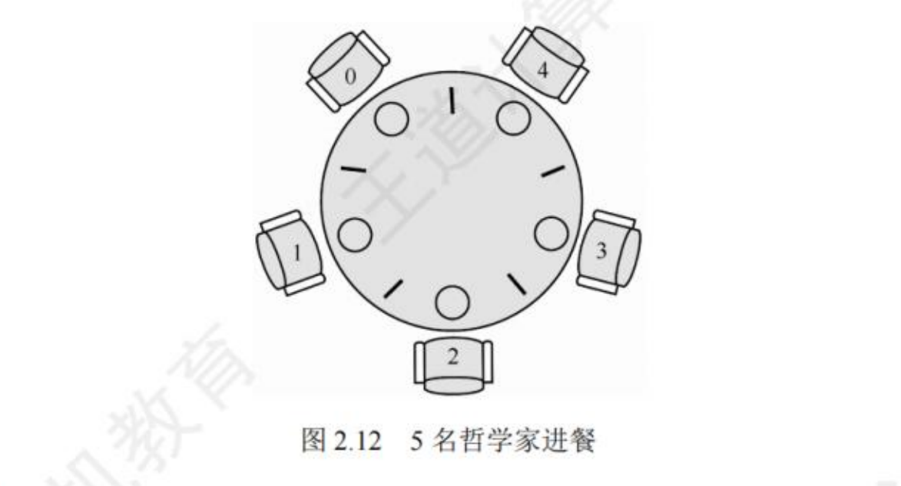

进程同步
临界区问题 critical section
1 | do{ |
- 进入区：请求进入临界区的代码
- 临界区：访问共享资源的代码
- 退出区：离开临界区的代码
- 剩余区：不涉及共享资源的代码
临界区问题必须要满足以下三个要求：
- 互斥（exclusion）：同一时刻只能有一个进程在临界区内执行
- 前进（progress）：如果没有进程在临界区内执行，并且有一个或多个进程想进入临界区，那么只能从这些进程中选择一个进入临界区，这种选择不能无限期地推迟
- 有限等待（bounded waiting）：在一个进程请求进入临界区和它被允许进入之间，必须存在一个上限，限制其他进程可以进入临界区的次数
软件解决临界区问题
Peterson算法
1 | do{ |
硬件解决临界区问题
中断
对于单处理器系统，可以通过禁止中断来实现临界区的互斥访问。 在进入临界区之前，进程禁用中断，确保在临界区内不会被中断，从而防止其他进程的调度。 退出临界区后，进程重新启用中断。
但是，这种方法只适用于单处理器系统，因为在多处理器系统中，其他处理器仍然可以运行并访问共享资源。
硬件原子指令
TestAndSet
1 | boolean TestAndSet(boolean *target){ |
使用TestAndSet实现临界区互斥
1 | do{ |
Swap
1 | void Swap(boolean *a, boolean *b){ |
使用Swap实现临界区互斥
1 | do{ |
信号量 Semaphore
用法
- 计数信号量，值域不受限制
- 二值信号量，只能是0，1
- 信号量的基本操作有两个：
- P操作（wait）：请求进入临界区，如果信号量的值大于0，则将其减1并进入临界区；如果信号量的值为0，则将进程阻塞，进入等待队列。
- V操作（signal）：释放临界区，将信号量的值加1，如果有进程在等待该信号量，则唤醒一个等待进程。
- 忙等类型：信号量不会为负值，因为它会一直等待而不放弃CPU控制权
- 非忙等：信号量可以为负值，表示有多少个进程在等待该信号量。得不到信号量的进程会被阻塞，进入等待队列，放弃CPU控制权

经典同步问题
生产者-消费者问题
题目描述：
生产者进程不断生成数据并放入缓冲区，消费者进程从缓冲区取出数据进行处理。缓冲区有固定大小n，生产者不能在缓冲区满时放入数据，消费者不能在缓冲区空时取出数据。每时刻只能由一方操作缓冲区
解决方案：
1 | semaphore full = 0;//当前已放东西的缓冲区个数 |
注意不能先P(mutex)再P(full)或P(empty)，否则可能会造成死锁,因为若没有空位或没有产品，进程会一直等待，导致互斥锁无法释放
读者写者问题
题目描述：
- 读读不互斥
- 读写互斥
- 写写互斥
解决方案：
1 | semaphore mutex = 1;//保护count的锁 |
if条件判断也需要互斥，否则可能会出现多个读者同时进入，导致读写冲突
这种方案可能会导致写者饥饿，因为如果有持续的读者到来，写者可能永远无法获得写锁。
公平读写者-写者问题的解决方案：
1 | semaphore mutex = 1;//保护count的锁 |
哲学家就餐问题
题目描述：
五个哲学家围坐在一张圆桌旁，每个哲学家有一个碗和两根筷子。哲学家只能使用自己左边和右边的筷子来吃饭。哲学家在思考和吃饭之间交替进行。为了吃饭，哲学家必须同时拿起左边和右边的筷子。如果两个相邻的哲学家同时拿起了同一根筷子，就会导致死锁。

解决方案：
1 | semaphore chopstick[5] = {1，1，1，1，1} |
规定必须两边筷子都拿到才能吃饭，避免了死锁的发生
除此之外，还可以通过以下方法避免死锁：
- 限制同时就餐的哲学家数量，最多只能有四个哲学家同时就餐。
- 奇数编号的哲学家先拿左边的筷子，再拿右边的筷子；偶数编号的哲学家先拿右边的筷子，再拿左边的筷子。
本博客所有文章除特别声明外，均采用 CC BY-NC-SA 4.0 许可协议。转载请注明来源 kjore's blog！